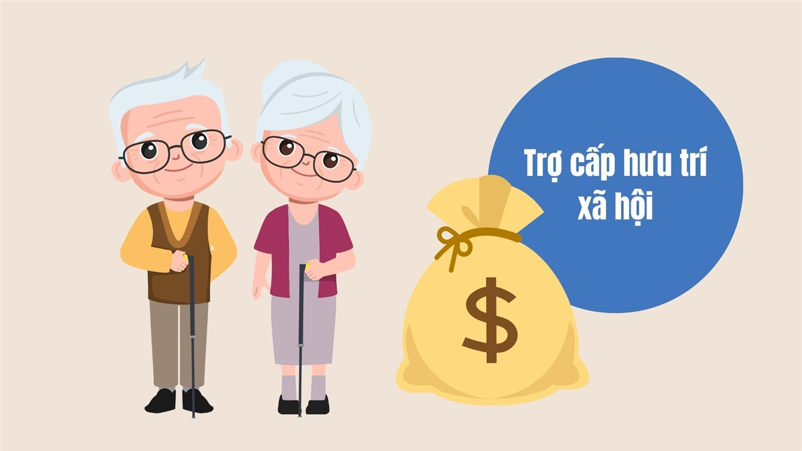

Kinh phí và thực hiện chi trả trợ cấp hưu trí xã hội theo Nghị định 176/2025/NĐ-CP quy định chi tiết và hướng dẫn thi hành về đối tượng và điều kiện hưởng trợ cấp hưu trí xã hội có hiệu lực từ ngày 01/07/2025
Kinh phí và thực hiện chi trả trợ cấp hưu trí xã hội đang được quy định tại điều 6 của Nghị định 176/2025/NĐ-CP như sau:
1. Kinh phí thực hiện chế độ, chính sách trợ cấp hưu trí xã hội thực hiện theo quy định tại khoản 1 Điều 31 Nghị định số 20/2021/NĐ-CP ngày 15 tháng 3 năm 2021 của Chính phủ quy định chính sách trợ giúp xã hội đối với đối tượng bảo trợ xã hội.
Trong đó: khoản 1 Điều 31 Nghị định số 20/2021/NĐ-CP như sau:

Điều 31. Kinh phí thực hiện chính sách trợ giúp xã hội thường xuyên
1. Kinh phí thực hiện chế độ chính sách trợ giúp xã hội thường xuyên, hỗ trợ nhận chăm sóc tại cộng đồng và kinh phí thực hiện chi trả chính sách; tuyên truyền, xét duyệt đối tượng; ứng dụng công nghệ thông tin; đào tạo, bồi dưỡng nâng cao năng lực cán bộ và kiểm tra giám sát được thực hiện theo quy định pháp luật về ngân sách nhà nước.
2. Thực hiện chi trả trợ cấp hưu trí xã hội
a) Chế độ, chính sách trợ cấp hưu trí xã hội được chi trả đầy đủ, kịp thời hằng tháng, đúng đối tượng;
b) Việc lựa chọn tổ chức dịch vụ chi trả trợ cấp hưu trí xã hội được thực hiện theo quy định của pháp luật. Tổ chức thực hiện chi trả bảo đảm yêu cầu có kinh nghiệm trong chi trả chính sách an sinh xã hội, có mạng lưới điểm giao dịch tại xã, phường, đặc khu; có thể thực hiện chi trả tại nhà cho một số đối tượng đặc thù; bảo đảm các điều kiện để thực hiện chi trả kịp thời và an toàn; có nhân lực hỗ trợ Ủy ban nhân dân cấp xã thực hiện cập nhật cơ sở dữ liệu, theo dõi thay đổi đối tượng ở cộng đồng;
c) Việc chi trả thông qua tổ chức dịch vụ chi trả được lập thành hợp đồng giữa Ủy ban nhân dân cấp xã và tổ chức dịch vụ chi trả. Hợp đồng ghi rõ phạm vi, đối tượng chi trả, phương thức chi trả (gồm phương thức chi trả qua tài khoản ngân hàng, tài khoản thanh toán điện tử do pháp luật quy định hoặc chi trả trực tiếp bằng tiền mặt), thời gian chi trả, mức chi phí chi trả, thời hạn thanh toán, quyền và trách nhiệm của các bên, thoả thuận khác có liên quan đến việc chi trả;
d) Trước ngày 25 hằng tháng, Ủy ban nhân dân cấp xã căn cứ danh sách đối tượng thụ hưởng trên địa bàn; số kinh phí chi trả tháng sau (bao gồm cả tiền truy lĩnh và mai táng phí của đối tượng); số kinh phí còn lại chưa chi trả các tháng trước (nếu có) thực hiện rút dự toán tại Kho bạc Nhà nước và chuyển vào tài khoản tiền gửi của tổ chức dịch vụ chi trả, đồng thời chuyển danh sách chi trả để tổ chức dịch vụ chi trả cho đối tượng thụ hưởng tháng sau. Trong thời gian chi trả, Ủy ban nhân dân cấp xã cử người giám sát việc chi trả của tổ chức thực hiện chi trả;
đ) Hằng tháng, tổ chức dịch vụ chi trả tổng hợp, báo cáo danh sách đối tượng đã nhận tiền, số tiền đã chi trả; danh sách đối tượng chưa nhận tiền để chuyển chi trả vào tháng sau, số kinh phí còn lại chưa chi trả và chuyển chứng từ (danh sách đã ký nhận, chứng từ chuyển khoản ngân hàng) cho Ủy ban nhân dân cấp xã trước ngày 20 hằng tháng để tổng hợp quyết toán kinh phí chi trả theo quy định.